User-Journey and Multi-Channel Funnel from App promotion using AppsFlyer Data.
February 21, 2022
An article by Sergey Matrosov
Before we start, we must warn you: there is a lack of data sharing because of the GDPR and iOS 14.5, so you won’t have consistent data as a result.
There are at least two trajectories of user-journey tracking: within a product, which is the scope of product analysis, and within traffic channels, which is within the scope of marketing analysis. The latter is called a multi-channel funnel. Nowadays, there are web and app promotions, so there are three multi-channel funnels 1: for the web, for apps and for a combination of these.
Today, we will build a user journey and a multi-channel funnel using AppsFlyer data for app acquisition. As a result, there will be a funnel of app sources, so-called media_sources, which acquareted users. Here are the final results:
- User-journey:

- Multi-channel funnel:

The problem with this is that it is really hard to do because of several difficulties associated with app promotion tracking.
Web Tracking
Let’s remember web tracking, which is pretty straightforward:
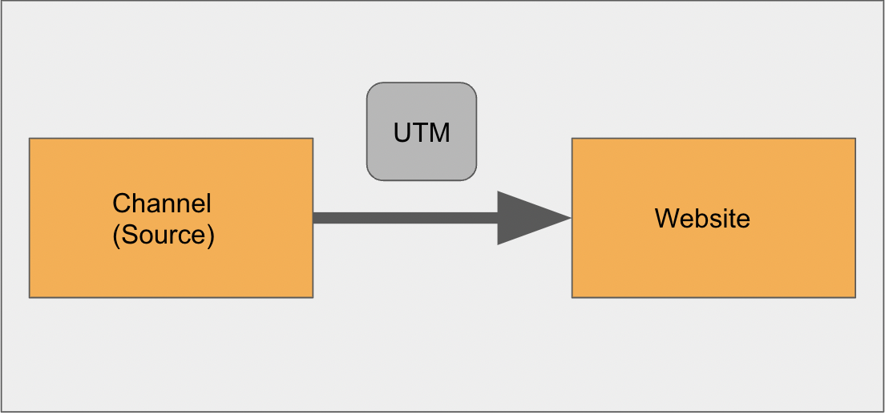
Using a UTM, you can track almost all online sources 2.
App Tracking
App tracking has two additional midpoints:
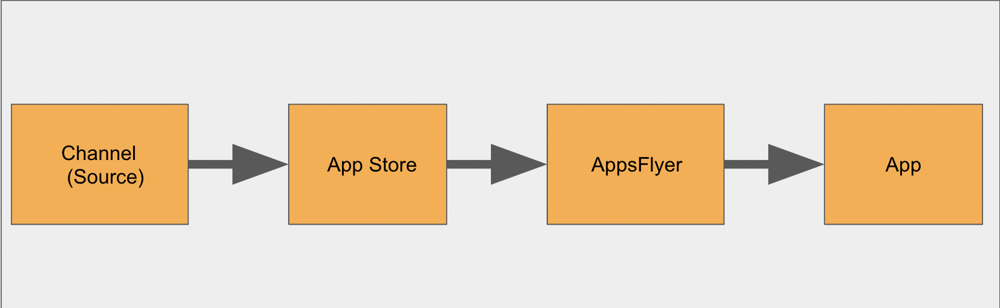
One of the problems is that you cannot get information directly from the App Store. Mobile Measurement Partners (MMPs) such as AppsFlyer can do this, and you have to use these in order to track sources.
- Availability of the raw data depends on your subscription plan! For example, there are tables that are unique for DataLocker 3 and AppsFlyer storage of raw reports, available as an additional premium feature:
clicks, impressions, clicks retargeting, impressions retargeting, sessions, retargeting sessions, cross-platform engagements. - Sadly, not all information is available for MMPs either, and there are several limits.
- AppsFlyer can hold one channel that initiated the install and only three last contributors to this install in the
installtable, but if one of the contributors was FB (for example, it was contributor-1), you will get nothing 4 in that column. - There are data marked as
restrictedwithin raw data 7 in theinstalltable. For example, this is true for Facebook. There is a way to get around this to some extent for Android, called Google Install Referrer8. Furthermore, if the media_source isrestricted, all data about contributors (assists) to install are erased too. If the contributor is from the list of restricted data sources, the value of the field is null (meaning that not every null in contributor data refers to lack of contributors). - AppsFlyer itself struggles with its own attribution because of a lack of identifiers of the touch from partners in some cases. It therefore has different ways to attribute install, events and retargeting sources to a specific media_source, e.g., a probabilistic method. We will talk about this more when we look at the
installtable. - GDPR, iOS 14.5, Android 12: once users opt out of personalized ads, app IDs (IDFA for Apple, GAID for Android) are recorded as nulls/a string of zeros, making it impossible to match with a
clicktable. - If an iOS 14.5 user does not allow App Tracking Transparency (ATT), it will be recorded as
“organic”. “Organic”as the media_source is not always the case when a user opens Google Play or the App Store, searches for an app and installs it without clicking on any ads. AppsFlyer marks everything as“organic”whenever it cannot define the source or if the attribution window of the source is over.
Yes, you can enrich it with data from the
clicktable, but there will be no SRN data like Google, FB etc. 5 6 The good news, based on our experience, is that the formula “one channel, one install” works most of the time, and if there are a lot of contributors to install, you can be sure that you have full data about all touchpoints before install 95% of the time.To sum up: even accurately joined data from AppsFlyer will be very fragmented. The main question is, speaking by analogy, can you drink from a broken cup that has been mended using only half of its pieces?
- The specifics of channel touch tracking:
- The most crucial one: all touches with channels (media_sources) are attributed to events that are provided from apps to AppsFlyer, especially when we are talking about retargeting campaigns. There is no default event from AppsFlyer like
installwhen we are trying to highlight the touch of retargeting campaigns. Say, for example, that the install of your app was from sourcelastclickcityand you started a retargeting campaign withingoogleon active users. In the app, you track (via your own tracker) only one event –“registration”. If you don’t send a“registration”event to AppsFlyer and the user made aregistration, you won’t see any rows withgooglesource: - If you send this event but didn’t set a campaign (
is_retargeting_true) from google as a retargeting campaign within AppsFlyer,“registration”will be attributed to the install source. - If there is no retargeting campaign at all, so that there was only an install campaign, and the user triggers a
“registration”event, it will be attributed to an install source.
appsflyerid media_source event event_time 111-111 lastclickcity install 2021-04-08 (No rows with login event = no rows with “google” source)
Because touch = event firing (= engagement 9), there is no source tracking by default. Please do not forget this 10. Yes, there is a session in AppsFlyer, but there is no such thing as the source of the session, and these are only available at DataLocker! Only events can highlight a touch: no event means no touch from the channel. However, you cannot just send every (sic!) event to AppsFlyer. We will talk about this more later.
appsflyerid media_source event event_time 111-111 lastclickcity install 2021-04-08 111-111 lastclickcity registration 2021-04-09 In some cases, it can be null.
Don’t forget to set a retargeting campaign as retargeting to get this:
appsflyerid media_source event event_time 111-111 lastclickcity install 2021-04-08 111-111 google registration 2021-04-09 There is more information about attribution of retargeting campaigns with visuals here.
appsflyerid media_source event event_time 111-111 lastclickcity install 2021-04-08 111-111 lastclickcity registration 2021-04-09 We suggest changing this second row to
direct/none.appsflyerid media_source event event_time 111-111 lastclickcity install 2021-04-08 111-111 direct/none registration 2021-04-09 - You may be thinking, why not send every event that you track in your app to AppsFlyer? The answer is because it’s not always free. And because AppsFlyer is not
- There is an event-based subscription plan for the game industries, which is why, in this case, you have to send only events that are crucial for marketing only.
- In all other cases, you pay for non-organic installs, reattributions (repeated installs) and re-engagements (which are strongly connected with retargeting11). This means that you should overfill AppsFlyer with events.
- If you are willing to combine app and web data about users, make the unauthorized zone of your app as short as possible. Push users to register when they first open your app. You can then give them a user ID (
customer_user_id), which is key to joining app and web data. This can’t be done throughappsflyer_id(like GA’s client ID but for apps) because you cannot implement this dimension on the web; it’s only App-scope. - Check inclusion windows within the AppsFlyer UI: these are classical lookback windows for view-through and clicks.
- You also need to check whether there are exclusion windows: minimum time between re-engagement conversions and minimum inactive period.
- Minimum time between re-engagement conversions: by default, the existing re-engagement window is closed and another re-engagement recorded; subsequent in-app events are attributed to the most recent re-engagement. To prevent this, set the minimum time between re-engagement conversions. In this case, only after the minimum elapsed time can a further re-engagement be recorded.
- Minimum inactive period: by setting a minimum inactivity time, AppsFlyer doesn’t attribute active users to retargeting campaigns = all events will be recorded to install media source. For example, if the minimum inactivity limit is three days, then users active in the previous 0–3 days aren’t attributed.
Recommendations about app tracking if there is an event-based subscription plan
We suggest that you do the following using AppsFlyer:
- Think very carefully about the event’s architecture within AppsFlyer: follow the recommendations.
- Send only marketing events to it.
- Retargeting:
- If you do a retargeting campaign, set it up as retargeting for AppsFlyer. Otherwise, events will be attributed to install source/campaign.
- If it is for non-registered users:
- Direct them to a specific non-main 12 unauthorized screen made specially for retargeting campaigns of this type (for non-registered users).
- Be sure that no other users can get to it from other screens in the app!
- Set up an
“open”AppsFlyer event to highlight the channel.
- If it is for registered users:
- Direct them to an authorized screen made specially for retargeting campaigns of this type (for non-registered users).
- Be sure that no other users can get to it from other screens in the app!
- Set up an
“open”AppsFlyer event to highlight the channel.
If you set up an “open” event for every or even just the main screen, you will dramatically increase your raw data.
- Reduce authorized zones to get user_id as soon as possible.
- Enrich event data that can be attributed to the channels, recorded by AppsFlyer, using GA4, joined with AppsFlyer by user_id. 13
- Do not share the dev.key with anyone outside of your company as there is a risk of being spammed by events.
AppsFlyer raw tables
Again, availability of the raw data depends on your subscription plan!
You can get raw data using the following 14:
- Raw data export page via a UI
- Pull and Push API
- DataLocker: this also depends on your plan. If the last one applies to you, you show the setup data stream to BQ from it. Not all tables can be represented at BQ from the start.
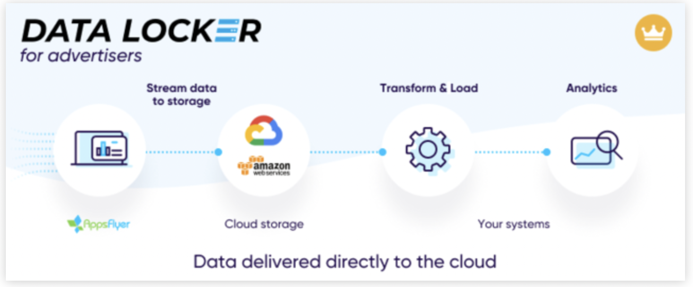
Now let’s see what we get from AppsFlyer using DataLocker in our database. 9 major tables 15 are enough to make a user journey:
- clicks
- installs
- post-attribution installs
- inapps
- clicks_retargeting
- inapps_retargeting
- post-attribution in-apps
- organic_uninstalls
- uninstalls
Here is a schema showing how most of these tables representing the user journey are connected:
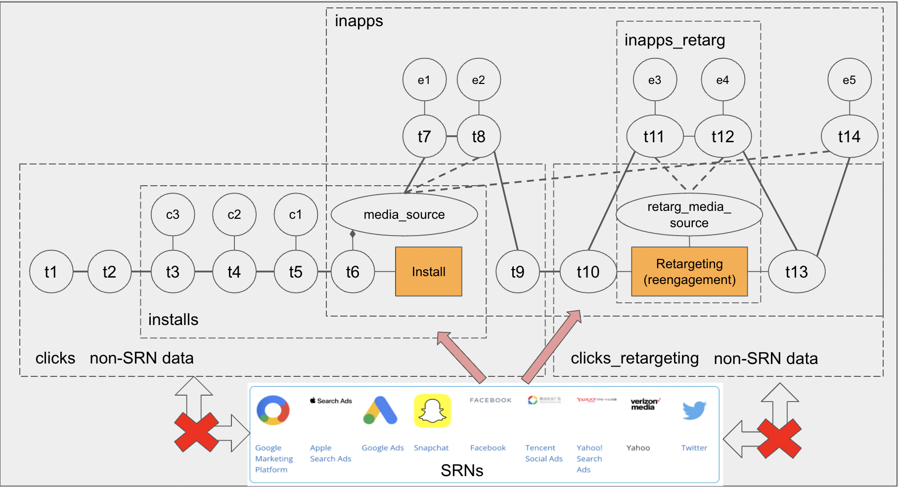
- t1, t2, etc., stand for “touch”.
- c1, c2, etc., stand for “contributor”.
- e1, e2, etc., stand for “event”.
- A dotted line stands for AppsFlyer attribution.
- SRN data are only in “installs” and “inapps” + “inapps_retarg” tables.
There are 4 additional tables:
- organic_uninstalls
- uninstalls
- post-attribution installs
- post-attribution in-app events
The last two are reports from the Protect360 tool, which provides fraud protection.
post-attribution installs:Protect can change the media source of install for 7 days after install (8 days in total) on organic or from the list of contributors 16 to install. The correct media source will be in therejected_reason_valuecolumn 17. Most of the time, it is null or organic.post-attribution in-app events:Protect can change the media source of events during the 30 days after install. The correct media source will be in therejected_reason_value column. Most of the time, it is null or organic.We constructed nine dummy tables with the required number of columns so that they repeat the data like in real AppsFlyer raw data.
Info about the users
There are six users with different trajectories, but each of them has its own features.
100-200has a fraudulent install media_source and a fraudulent retargeting campaign. We have to change both of these using tables from Protect360.111-222has a different install time forclicksandinappstables. We will use install time frominappsbecause it was earlier. There is also a duplicate of the touch in clicks and installs by themobtopsource. This will be deduplicated by DISTINCT.333-444has reinstall from the retargeting campaign.777-888has a fraudulent install media_source and doesn’t have the correct media source, so we have to delete this user.999-100has a fraudulent retargeting campaign and does not have the correct media source for it, so we have to delete the row with the retargeting campaign for this user.Tables
We tried to use all the data fields as is 18.
Clicks
These are clicks from ads but without SRNs, like Google, Facebook, etc. 19 Remember: if a user has already installed your app but still clicks on your ad, these clicks will be in the “click” table. Furthermore, if users click on an ad but don’t open your app, there will be clicks in this table too.
WITH clicks AS ( SELECT '2022-03-29 15:03:02 UTC' AS event_time, 'click' AS event_name, 'cpanetwork1' AS media_source, 'aaa111-bbb111' AS advertising_id UNION ALL SELECT '2022-03-30 16:15:24 UTC', 'click', 'cpanetwork2', 'aaa111-bbb111' UNION ALL SELECT '2022-04-01 17:15:00 UTC', 'click', 'cpanetwork3', 'aaa111-bbb111' UNION ALL SELECT '2022-03-31 16:03:47 UTC', 'click', 'mobtop', 'aaa111-bbb111' UNION ALL SELECT '2022-03-28 17:15:23 UTC', 'click', 'cpanetwork1', 'ccc555-ddd555' UNION ALL SELECT '2022-03-30 18:15:32 UTC', 'click', 'cpanetwork2', 'ccc555-ddd555' ), SELECT * FROM clicks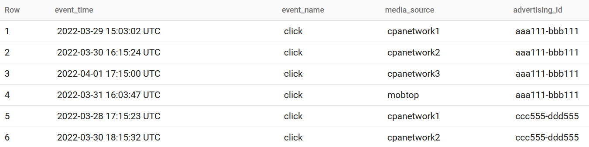
Installs
- This contains the source of install and assisted media sources. Remember: if the application is downloaded but the user never launches it, AppsFlyer won’t be able to record any install.
- If there were clicks from the SRN from a specific user but no install from him/her, there will be no data.
- There are data from several partners as Facebook will mostly be set as restricted.
- The reattribution window “is a time window that begins the first time a user installs the app and continues for a duration set by the advertiser (default 90 days). During the reattribution window, app reinstalls aren’t recorded as new installs and don’t generate a new install postback unless they originate from a retargeting campaign”.20
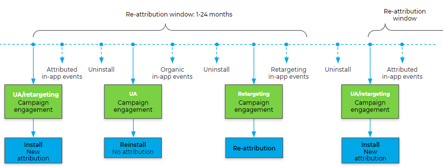
This means if the user uninstalls your app during the reattribution window and reinstalls it either from
- another user acquisition campaign – there will be no attribution (= no install event)
or
- retargeting campaigns (set as retargeting! e.g., retargeting_is_true), in which case it will be recorded in the“inapps_retargeting”table (not in the“install”table!) withretargeting_conversion_typeas“reattribution”.You also need to remember that “regardless of the reattribution window, when an application is backed up using iCloud and later restored (on the same device or on another device), AppsFlyer doesn’t count it as a new install or reinstall. A user who restores an app from iCloud maintains their AppsFlyer ID and attribution data 21.”
Let’s say a few words about how AppsFlyer assigns contributors to install. When your app is opened the very first time by the user, it initiates the AppsFlyer SDK. The AppsFlyer then goes to its databases with clicks and impressions from all integrated partners that are activated for your AppsFlyer account. AppsFlyer also sends API calls to SRNs. When AppsFlyer gets an answer, it uses advertising_id or several parameters like user Agent + IP (for probabilistic attribution) to make an attribution, considering the following priorities:
- Type of interaction (clicks means more than impression)
- Method of attribution (deterministic has more value than probabilistic)
- Attribution window (click/view-through lookback windows)
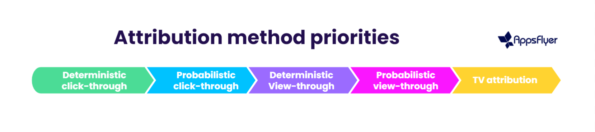
The winner is assigned as install media_sources, and all others are assigned as contributors.
However, if the winner from restricted list = the media_source is
restricted, all data about contributors (assists) to install are erased. If the contributor is from the list of restricted data sources, the value of the field is null. This means that not every null in contributor data means lack of a contributor.Some words about deterministic and probabilistic attribution methods:
- The deterministic method means that AppsFlyer sends advertising_id connected to install to all active integrated networks, and if it gets information from one of these networks indicating that this advertising_id is from the exact network, it assigns install to this exact network.
- There are cases where there are no data about the install source found by this ID. AppsFlyer has a set of attributes about this install, like device_id, IP, etc., and networks can share this info too. Using data from the last 24 hours, AppsFlyer compares matches for each attribute with data from networks.
For example, we have the data below:
Attributes AppsFlyer Network-1 Network-2 IP 111.111 111.111 222.222 UserAgent 123 234 123 platform iOS Android iOS Network-1 matches with AppsFlyer data 1 of 3 and Network-2 - 2 of 3. AppsFlyer attributes install to Network-2. This is a very simple probabilistic method, but AppsFlyer claims that it has a 93% probability of correctly attributing the media_source of install.
WITH installs AS ( SELECT '2022-03-31 18:03:47 UTC' AS install_time, 'install' AS event_name, 'googleads' AS media_source, '2022-03-31 17:03:47 UTC' AS contributor_1_touch_time, 'twitter' AS contributor_1_media_source, '2022-03-31 16:03:47 UTC' AS contributor_2_touch_time, 'mobtop' AS contributor_2_media_source, '2022-03-31 15:03:47 UTC' AS contributor_3_touch_time, 'organic' AS contributor_3_media_source, '111-222' AS appsflyer_id, 'aaa111-bbb111' AS advertising_id UNION ALL SELECT '2022-03-30 18:05:47 UTC', 'install', 'organic', null, null, null, null, null, null, '333-444', 'bbb222-ccc222' UNION ALL SELECT '2022-03-29 17:06:50 UTC', 'install', 'facebook', '2022-03-28 15:06:50 UTC', 'mobtop', null, null, null, null, '555-666', 'ccc555-ddd555' UNION ALL --must be deleted due to fraudulent install SELECT '2022-03-29 17:07:50 UTC', 'install', 'fraudcpa', null, null, null, null, null, null, '777-888', 'eee777-fff777' UNION ALL --media_source will be changed due to fraudulent install on organic SELECT '2022-03-29 17:08:50 UTC', 'install', 'fraudcpa', null, null, null, null, null, null, '999-100', 'ggg999-iii999' UNION ALL --media_source will be changed due to fraudulent install on contributor1 SELECT '2022-03-29 18:08:50 UTC', 'install', 'fraudcpa', '2022-03-29 15:00:50 UTC', 'goodcpa', null, null, null, null, '100-200', 'jjj100-kkk100' ) SELECT * FROM installs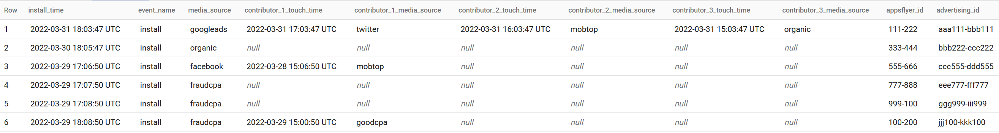
Post-Attribution Installs
One of the tables from Protect360 gives the correct media_source if it considers the current one a fraud.
Remember: “Protect360 performs post-attribution detection during the calendar month of the install and up to the seventh day of the following month. This means, for example, that for installs in November, Protect360 checks for fraud up to December 7 22”.
WITH post_attribution_installs AS ( SELECT '777-888' AS appsflyer_id, NULL AS rejected_reason_value UNION ALL SELECT '999-100', 'organic' UNION ALL SELECT '100-200', 'contributor1' ) SELECT * FROM post_attribution_installs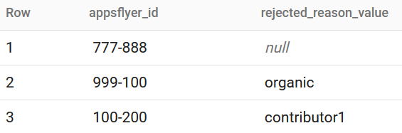
In-apps (events)
Remember: there is a double attribution of retargeting events. This means that events from retargeting campaigns are also attributed to the install campaign for this appsflyer_id. As a result, there is duplication of events: one is stored in the in-apps (events) table and another one in inapps_retargeting (events). The difference is that the in-apps table for the event from the retargeting campaigns field
is_primary_attribution = false23. This is why we filter events with such values.inapps AS ( SELECT '2022-03-31 18:02:47 UTC' AS install_time, 'content_view' AS event_name, '2022-03-31 18:06:02 UTC' AS event_time, 'googleads' AS media_source, TRUE AS is_primary_attribution, '111-222' AS appsflyer_id, null AS customer_user_id UNION ALL SELECT '2022-03-31 18:02:47 UTC', 'registation', '2022-03-31 18:09:47 UTC', 'googleads', TRUE, '111-222', '111' --double_attribution for '111-222' UNION ALL SELECT '2022-03-31 18:02:47 UTC', 'login', '2022-04-01 20:07:02 UTC', 'googleads', FALSE, '111-222', '111' -- UNION ALL SELECT '2022-03-30 18:05:47 UTC', 'content_view', '2022-03-30 18:07:47 UTC', 'organic', TRUE, '333-444', '333' UNION ALL SELECT '2022-03-29 17:06:47 UTC', 'content_view', '2022-03-29 17:08:50 UTC', 'facebook', TRUE, '555-666', null), SELECT * FROM inapps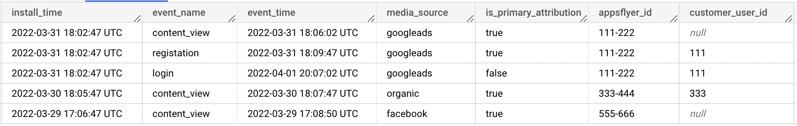
We made the install time for appsflyer_id
111-222in this table earlier than in the install table for the same user. Why?Well, the first possible issue is that
- Sometimes, install time in the
installstable is different from theinappstable. We therefore need to consider it to have an“install”event before all other events. This is absolutely fine. AppsFlyer does it because of the abnormal behaviour of the install.
Other possible issues:
- Occasionally, there may be several install sources for one
appsflyer_id(for the same reason as in point 1 above). - Sometimes, there will be more than one appsflyer_id for one user_id (
customer_user_id) due to the user ID having installed your app twice. Each install initializes a newappsflyer_id! Once again, we need to remind you about a small unauthorized zone as a must in order to get full data about the user! - Sometimes, there will be more than one user_id (
customer_user_id) for oneappsflyer_idbecause the user has made several registrations.
Clicks_Retargeting
These are clicks from retargeting ads but without SRNs, like Google, Facebook, etc. Remember: if a user has already re-engaged with your app but still clicks on your retargeting ad, these clicks will be in the “click_retargeting” table. Furthermore, if users click on a retargeting ad but do not open your app, there will be clicks in this table too.
WITH clicks_retargeting AS ( SELECT '2022-04-01 21:03:02 UTC' AS event_time, 'click' AS event_name, 'email' AS media_source, 'aaa111-bbb111' AS advertising_id UNION ALL SELECT '2022-03-31 08:15:23 UTC', 'click', 'google_retarg', 'bbb222-ccc222' ) SELECT * FROM clicks_retargeting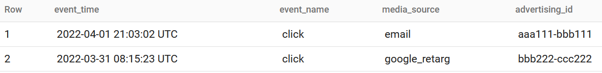
In-apps_Retargeting (events)
- This table stores event data from retargeting campaigns, including SRNs. The most important event is the event of opening the app. (In our case, this is
“content_view”.) The retargeting campaign is attributed to this event. Say only“purchase”is sent to AppsFlyer. This event is unlikely to occur that often, compared with other possible engagements within your app, and if the user clicks on your retargeting app, gets to your app and doesn’t make any purchase, there will be no data in this table about this touch. - There can also be the following attribution events:
- Re-engagement: if your app is on the device of the user, the media source motivating the user to open the app is credited with a re-engagement.
- Reattribution: retargeting reinstall. Let’s repeat: if the user uninstalls your app during the reattribution window and reinstalls it through retargeting campaigns, all in-apps events for this user will be recorded with
retargeting_conversion_typeas“reattribution”. You can therefore change the very first event of the retargeting campaign ifretargeting_conversion_type=“reattribution”to reinstall. - Let’s also say a few words about the scenario when there are two retargeting campaigns for the same user. If the user engages with another retargeting campaign during the re-engagement window of the previous one, which is not blocked by an exclusion window, the current re-engagement window (of the previous retargeting campaign) ends immediately, and a new re-engagement window begins. The inapps_retargeting will have the latest (second) campaign post engaging with it and opening the application, so the events will be in the second campaign going forward, until the new re-engagement window ends.
- Let’s also remember that there is a double attribution of retargeting events. This means that events from retargeting campaigns are also attributed to the install campaign for this appsflyer_id. As a result, there is duplication of events: one is stored in the in-apps (events) table and another one in inapps_retargeting (events). The difference is that the in-apps_retargeting table for the event from the retargeting campaigns field
is_primary_attribution = true.
WITH inapps_retargeting AS ( SELECT 'email' AS media_source, '2022-04-01 19:06:02 UTC' AS event_time, 'content_view' AS event_name, '111-222' AS appsflyer_id, '111' AS customer_user_id, NULL AS retargeting_conversion_type UNION ALL SELECT 'email', '2022-04-01 20:07:02 UTC', 'login', '111-222', '111', NULL UNION ALL SELECT 'google_retarg', '2022-03-31 09:07:00 UTC', 'content_view', '333-444', '333', 'reattribution' UNION ALL SELECT 'google_retarg', '2022-03-31 09:07:02 UTC', 'registration', '333-444', '333', NULL UNION ALL SELECT 'cpanetwork_retarg', '2022-03-31 10:10:10 UTC', 'content_view', '100-200', NULL, NULL UNION ALL SELECT 'cpanetwork_retarg', '2022-03-31 13:15:10 UTC', 'content_view', '999-100', NULL, NULL ), SELECT * FROM inapps_retargeting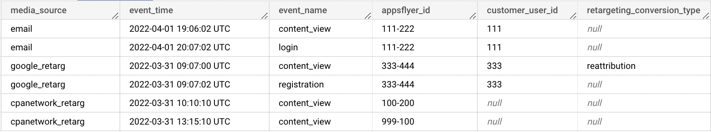
Post-Attribution In-app Events
WITH post_attribution_in_app_events AS ( SELECT '2022-03-31 10:10:10 UTC' AS event_time, 'content_view' AS event_name, '100-200' AS appsflyer_id, TRUE AS is_retargeting, 'organic' AS rejected_reason_value UNION ALL SELECT '2022-03-31 13:15:10 UTC', 'content_view', '999-100', TRUE, NULL ) SELECT * FROM post_attribution_in_app_events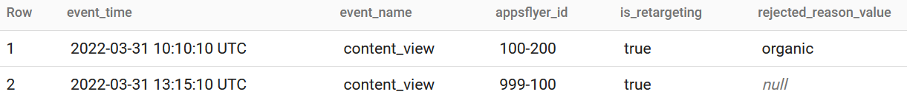
Organic_Uninstalls
Note that the event time represents the time AppsFlyer determines the app was uninstalled, and not the actual uninstall itself 24.
WITH organic_uninstalls AS ( SELECT 'googleads' AS media_source, '2022-04-01 10:09:47 UTC' AS event_time, '333-444' AS appsflyer_id ) SELECT * FROM organic_uninstalls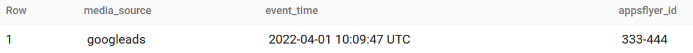
Uninstalls
Note that the event time represents the time AppsFlyer determines the app was uninstalled, and not the actual uninstall itself.
WITH uninstalls AS ( SELECT 'googleads' AS media_source, '2022-04-02 18:09:47 UTC' AS event_time, '111-222' AS appsflyer_id ) SELECT * FROM uninstalls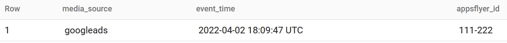
Raw_Data
Now it’s time to combine data items simply by joining them and making some simple transformations.
raw_data AS (SELECT CASE WHEN true_install_time_by_userid IS NULL THEN true_install_time_by_afid ELSE true_install_time_by_afid END AS true_install_time, * FROM (SELECT FIRST_VALUE(install_time) OVER (PARTITION BY customer_user_id ORDER BY install_time ASC) AS true_install_time_by_userid, FIRST_VALUE(install_time) OVER (PARTITION BY appsflyer_id ORDER BY install_time ASC) AS true_install_time_by_afid, * FROM (SELECT LAST_VALUE(customer_user_id IGNORE NULLS) OVER (PARTITION BY appsflyer_id ORDER BY install_time DESC RANGE BETWEEN UNBOUNDED PRECEDING AND CURRENT ROW) AS customer_user_id, appsflyer_id, media_source, true_install_source, clicks_media_source, clicks_event_name, clicks_event_time, install_time, contributor_1_media_source, contributor_1_touch_time, contributor_2_media_source, contributor_2_touch_time, contributor_3_media_source, contributor_3_touch_time, clicks_retarg_source, clicks_retarg_event_name, clicks_retarg_event_time, retarg_source, retarg_event_name, retarg_event_time, inapps_media_source, inapps_event_name, inapps_event_time, uninstall_organic_source, uninstall_organic_time, uninstall_nonorg_source, uninstall_nonorg_time FROM (SELECT DISTINCT customer_user_id, --delete fraud installs CASE WHEN problem_install_afid IS NOT NULL AND true_install_source IS NULL THEN 'delete' ELSE appsflyer_id END AS appsflyer_id, CASE WHEN problem_install_afid IS NOT NULL AND true_install_source = 'organic' THEN 'organic' WHEN problem_install_afid IS NOT NULL AND true_install_source = 'contributor1' THEN contributor_1_media_source WHEN problem_install_afid IS NOT NULL AND true_install_source = 'contributor2' THEN contributor_2_media_source WHEN problem_install_afid IS NOT NULL AND true_install_source = 'contributor3' THEN contributor_3_media_source ELSE media_source END AS media_source, true_install_source, clicks_media_source, clicks_event_name, clicks_event_time, CASE WHEN install_time_inapp IS NULL THEN install_time_installs ELSE install_time_inapp END AS install_time, CASE WHEN problem_install_afid IS NOT NULL AND true_install_source = 'contributor1' THEN NULL ELSE contributor_1_media_source END AS contributor_1_media_source, CASE WHEN problem_install_afid IS NOT NULL AND true_install_source = 'contributor1' THEN NULL ELSE contributor_1_touch_time END AS contributor_1_touch_time, CASE WHEN problem_install_afid IS NOT NULL AND true_install_source = 'contributor2' THEN NULL ELSE contributor_2_media_source END AS contributor_2_media_source, CASE WHEN problem_install_afid IS NOT NULL AND true_install_source = 'contributor2' THEN NULL ELSE contributor_2_touch_time END AS contributor_2_touch_time, CASE WHEN problem_install_afid IS NOT NULL AND true_install_source = 'contributor3' THEN NULL ELSE contributor_3_media_source END AS contributor_3_media_source, CASE WHEN problem_install_afid IS NOT NULL AND true_install_source = 'contributor3' THEN NULL ELSE contributor_3_touch_time END AS contributor_3_touch_time, clicks_retarg_source, clicks_retarg_event_name, clicks_retarg_event_time, --make nulls in retargeting columns if fraud CASE WHEN true_retarg_source = 'delete' THEN NULL WHEN true_retarg_source IS NOT NULL AND true_retarg_source != 'delete' THEN true_retarg_source ELSE retarg_source END AS retarg_source, CASE WHEN true_retarg_source = 'delete' THEN NULL ELSE retarg_event_name END AS retarg_event_name, CASE WHEN true_retarg_source = 'delete' THEN NULL ELSE retarg_event_time END AS retarg_event_time, inapps_media_source, inapps_event_name, inapps_event_time, uninstall_organic_source, uninstall_organic_time, uninstall_nonorg_source, uninstall_nonorg_time FROM (SELECT inapps.customer_user_id, installs.appsflyer_id, installs.media_source, post_attribution_installs.appsflyer_id AS problem_install_afid, rejected_reason_value AS true_install_source, clicks.media_source AS clicks_media_source, clicks.event_name AS clicks_event_name, CAST(clicks.event_time AS STRING) AS clicks_event_time, CAST(installs.install_time AS STRING) AS install_time_installs, CAST(inapps.install_time AS STRING) AS install_time_inapp, installs.contributor_1_media_source, CAST(installs.contributor_1_touch_time AS STRING) AS contributor_1_touch_time, installs.contributor_2_media_source, CAST(installs.contributor_2_touch_time AS STRING) AS contributor_2_touch_time, installs.contributor_3_media_source, CAST(installs.contributor_3_touch_time AS STRING) AS contributor_3_touch_time, clicks_retarg.media_source AS clicks_retarg_source, clicks_retarg.event_name AS clicks_retarg_event_name, CAST(clicks_retarg.event_time AS STRING) AS clicks_retarg_event_time, retarg.media_source AS retarg_source, retarg.event_name AS retarg_event_name, CAST(retarg.event_time AS STRING) AS retarg_event_time, fraud_retarg.media_source AS true_retarg_source, inapps.media_source AS inapps_media_source, inapps.event_name AS inapps_event_name, CAST(inapps.event_time AS STRING) AS inapps_event_time, organic_uninstalls.media_source AS uninstall_organic_source, CAST(organic_uninstalls.event_time AS STRING) AS uninstall_organic_time, uninstalls.media_source AS uninstall_nonorg_source, CAST(uninstalls.event_time AS STRING) AS uninstall_nonorg_time FROM (SELECT appsflyer_id, advertising_id, media_source, install_time, contributor_1_media_source, contributor_1_touch_time, contributor_2_media_source, contributor_2_touch_time, contributor_3_media_source, contributor_3_touch_time FROM installs ) AS installs LEFT JOIN (SELECT advertising_id, media_source, event_name, event_time FROM clicks ) AS clicks ON installs.advertising_id = clicks.advertising_id LEFT JOIN (SELECT appsflyer_id, rejected_reason_value FROM post_attribution_installs ) AS post_attribution_installs ON installs.appsflyer_id = post_attribution_installs.appsflyer_id LEFT JOIN --add customer_user_id, because all customer_user_id are NULL at installs (SELECT FIRST_VALUE (customer_user_id IGNORE NULLS) OVER (PARTITION BY appsflyer_id ORDER BY install_time) AS customer_user_id, appsflyer_id, media_source, install_time, event_name, event_time FROM inapps WHERE is_primary_attribution = TRUE ) AS inapps ON installs.appsflyer_id = inapps.appsflyer_id LEFT JOIN (SELECT advertising_id, media_source, event_name, event_time FROM clicks_retargeting ) AS clicks_retarg ON installs.advertising_id = clicks_retarg.advertising_id LEFT JOIN --add retarteting campaigns and events name with event_time (as contidition) (SELECT customer_user_id, appsflyer_id, CONCAT('utm_retargeting=', media_source) AS media_source, event_time, CASE WHEN retargeting_conversion_type = 'reattribution' THEN 'reinstall' ELSE event_name END AS event_name FROM inapps_retargeting ) AS retarg ON installs.appsflyer_id = retarg.appsflyer_id LEFT JOIN (SELECT appsflyer_id, CASE WHEN rejected_reason_value IS NULL THEN 'delete' ELSE CONCAT('utm_retargeting=', rejected_reason_value) END AS media_source, event_time, event_name FROM post_attribution_in_app_events WHERE is_retargeting IS TRUE ) AS fraud_retarg ON retarg.appsflyer_id = fraud_retarg.appsflyer_id AND retarg.event_time = fraud_retarg.event_time AND retarg.event_name = fraud_retarg.event_name LEFT JOIN (SELECT appsflyer_id, IF(media_source IS NULL, 'none', 'none') AS media_source, event_time FROM organic_uninstalls ) AS organic_uninstalls ON installs.appsflyer_id = organic_uninstalls.appsflyer_id LEFT JOIN (SELECT appsflyer_id, IF(media_source IS NULL, 'none', 'none') AS media_source, event_time FROM uninstalls ) AS uninstalls ON installs.appsflyer_id = uninstalls.appsflyer_id ) ) ) --excluding user with adif = '777-888' AND WHERE (appsflyer_id != 'delete') ) ) SELECT * FROM raw_data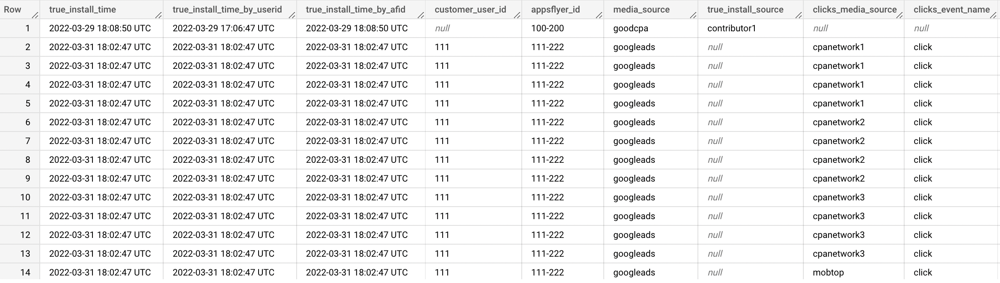
(With contributor_2 and other columns)
Channels
Now we need to store channels in one column. To do so, we need to use the UNPIVOT function.
channels AS (SELECT DISTINCT appsflyer_id, customer_user_id, CASE WHEN channel LIKE '%utm_retargeting%' THEN REGEXP_EXTRACT(channel, 'utm_retargeting=([^&]*)') ELSE channel END AS channel, CASE WHEN channel LIKE '%utm_retargeting%' THEN 1 ELSE 0 END AS is_retarg, true_install_time, CAST(touch_time AS TIMESTAMP) AS touch_time FROM raw_data UNPIVOT ((channel, touch_time) FOR channel_time_pair IN ((clicks_media_source, clicks_event_time), (media_source, install_time), (contributor_1_media_source, contributor_1_touch_time), (contributor_2_media_source, contributor_2_touch_time), (contributor_3_media_source, contributor_3_touch_time), (clicks_retarg_source, clicks_retarg_event_time), (inapps_media_source, inapps_event_time), (retarg_source, retarg_event_time), (uninstall_organic_source, uninstall_organic_time), (uninstall_nonorg_source, uninstall_nonorg_time) )) ) SELECT * FROM channels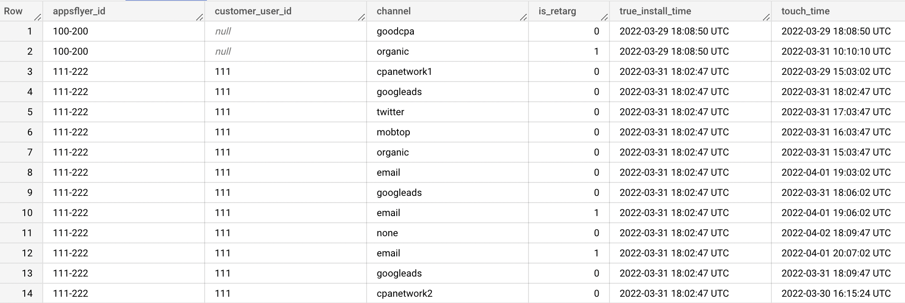
Events
We also have to do the same for the events. We cannot use UNPIVOT simultaneously for channels and events because you’ll get CROSS JOIN events with channels, which will create meaningless rows.
events AS (SELECT DISTINCT appsflyer_id, customer_user_id, event, CAST(time_of_event AS TIMESTAMP) AS time_of_event FROM raw_data UNPIVOT ((event, time_of_event) FOR event_time_pair IN ((clicks_event_name, clicks_event_time), (media_source, install_time), (clicks_retarg_event_name, clicks_retarg_event_time), (inapps_event_name, inapps_event_time), (retarg_event_name, retarg_event_time) )) ) SELECT * FROM events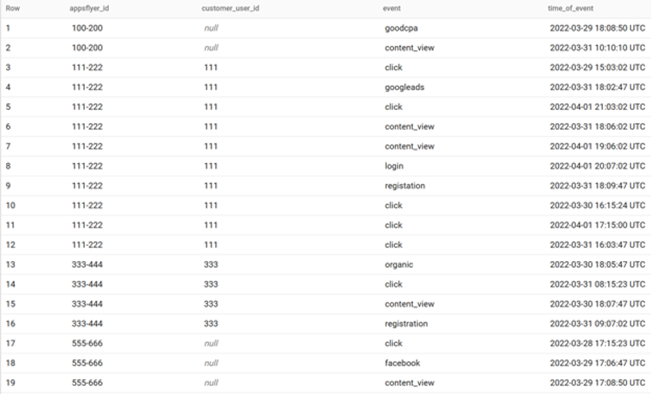
User Journey
The next step is just to join it, making an install
“event”based on the timestamp and converting some channels to“direct/none”, as we proposed before.user_journey AS (SELECT appsflyer_id, customer_user_id, CASE WHEN LAG(channel) OVER (PARTITION BY appsflyer_id, customer_user_id, is_retarg ORDER BY touch_time ASC ) = channel AND event_name = 'install' THEN channel WHEN LAG(channel) OVER (PARTITION BY appsflyer_id, customer_user_id, is_retarg ORDER BY touch_time ASC ) = channel AND event_name IS NOT NULL THEN 'direct/none' ELSE channel END AS channel, touch_time, --or leave it as null if you wish --event_name CASE WHEN event_name IS NULL THEN 'click' ELSE event_name END AS event_name FROM( SELECT appsflyer_id, customer_user_id, channel, is_retarg, touch_time, CASE --where can not be events before install! WHEN CAST(true_install_time AS TIMESTAMP) > CAST(touch_time AS TIMESTAMP) THEN NULL --install event WHEN CAST(true_install_time AS TIMESTAMP) = touch_time THEN 'install' WHEN channel = 'none' THEN 'uninstall' WHEN event = 'click' THEN NULL ELSE event END AS event_name FROM (SELECT channels.appsflyer_id, channels.customer_user_id, channel, is_retarg, true_install_time, touch_time, event FROM (SELECT * FROM channels) AS channels LEFT JOIN (SELECT * FROM events) AS events ON channels.appsflyer_id = events.appsflyer_id AND channels.customer_user_id = events.customer_user_id AND channels.touch_time = events.time_of_event ORDER BY channels.appsflyer_id, touch_time) ) ) SELECT * FROM user_journey ORDER BY appsflyer_id, customer_user_id, touch_time ASC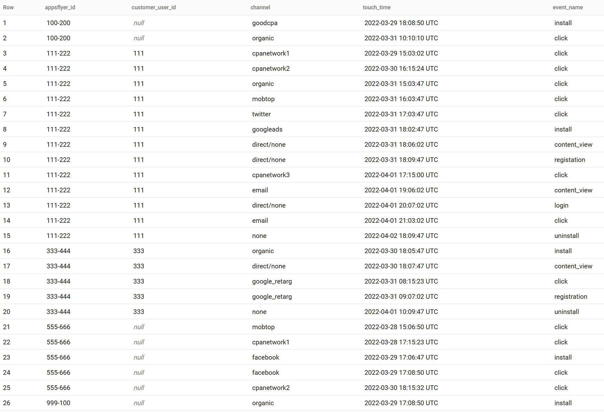
Conversion Paths
Now we make
“install”for the conversion (you can change it to registration, for example):conversion_paths_by_user AS (SELECT appsflyer_id, customer_user_id, channel, event_name FROM (SELECT *, --MIN = first interaction with desired event_name MIN(CASE WHEN event_name = 'install' THEN touch_number END) OVER (PARTITION BY appsflyer_id, customer_user_id) AS conversion FROM (SELECT *, ROW_NUMBER() OVER (PARTITION BY appsflyer_id, customer_user_id) AS touch_number FROM user_journey) ) WHERE touch_number <= conversion ) SELECT * FROM conversion_paths_by_user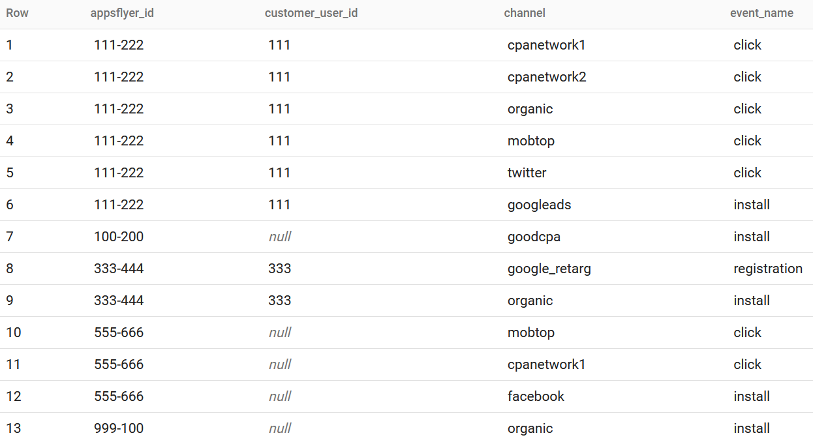
This looks nice, but as we said earlier, there can be additional channels that are not represented here!
Multi-channel Funnel
Here is our final result:
multi_channel_funnel AS ( SELECT multi_channel_funnel, COUNT(multi_channel_funnel) AS count FROM (SELECT ARRAY_TO_STRING(multi_channel_funnel, '->') AS multi_channel_funnel FROM (SELECT appsflyer_id, customer_user_id, ARRAY_AGG(channel) AS multi_channel_funnel FROM conversion_paths_by_user GROUP BY 1, 2) ) GROUP BY 1) SELECT * FROM multi_channel_funnel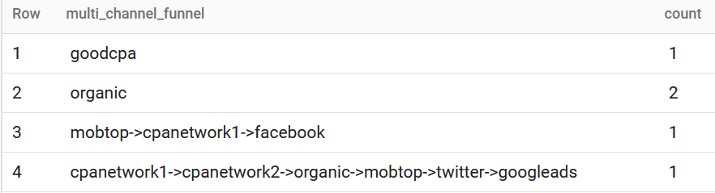
Queries
Here is the query with dummy data, which you can easily rewrite to actual data. Change the name of tables if needed and select the time range. That’s all. We hope you find this helpful. Feel free to write to us if you would like a consultation.
1 Which can be combined into one, of course.
2 Note: by using custom unique domains/coupons, you can also track some offline ads.
4 We will use NULL as a synonym.
5 This also means that you cannot compare raw clicks/impressions data with SRN ad account data: you can only do it using AppsFlyer reports like Overview, within its user interface.
6 The same goes for the impressions table. We won’t use it because impressions data are also restricted for the web.
7 https://support.appsflyer.com/hc/en-us/articles/360006868017-Raw-data-content-restriction-media-source-or-user-identifiers – Facebook, TikTok, Twitter, Roku.
9 Note: clicks and impressions are engagements too.
10 If you send a server-to-server event, remember to add the appsflyer_id parameter for correct attribution.
11 You are charged when the user opens the app after clicking on the retargeting campaign. All following openings are not billed.
12 Only for install campaigns!
13 There is no other identifier to do this.
15 If some tables are missing, you need to look at your data streams from Data Locker.
16 https://support.appsflyer.com/hc/en-us/articles/207040506-Assisted-Installs#assisted-installs.
17 It is hard to say why AppsFlyer calls it this, but you should treat it like a
“true_media_source”.18 https://support.appsflyer.com/hc/en-us/articles/208387843#data-fields-dictionary
19 Can you remember how to check discrepancies between Google Ads clicks and web sessions? It’s easy because you have a referrer for raw data from Google Analytics. You cannot do it for apps – not just because stores don’t share info. with you; the same goes for AppsFlyer too! Sadly, having faith is the only way.
20 https://support.appsflyer.com/hc/en-us/articles/115002587066-Re-attribution-window-explained
24 https://support.appsflyer.com/hc/en-us/articles/4408933557137#overview%C2%A0
- AppsFlyer can hold one channel that initiated the install and only three last contributors to this install in the